Video
Example File
Guide
Content Order and Tags Order
Now that the structure in our example document has been repaired with the Reading Order tool, I'm ready to demonstrate the third step in the PDF optimization process: review and repair content order and tags order. At the current time, due to a glitch in the PDF creation process with Word source documents, the content order for images should be repaired. Also, when untagged elements (e.g., footer text) have been manually tagged, in most cases the content order and tags order will need to be repaired.
Objectives
- Identify the process for reviewing and repairing the content order using the Order panel.
- State the process for reviewing and repairing the tags order using the Tags panel.
I'll open the example file in Acrobat on Windows. To review the content order, from the Tools pane I’ll select “Accessibility”, and then click “Reading Order.” 
I'll make sure that the "Show page content groups" checkbox is checked,
and that the “Page content order” radio button is selected.
In the document viewer, the white label in each region displays a number to indicate the element’s position in the page content order on its page.
Reflow
Reflow is an option that allows visual users to view a PDF with its elements constrained to the visible width of a document.
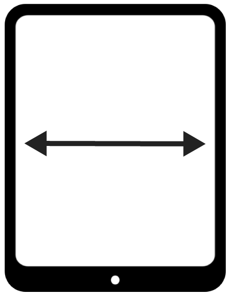
The page content order determines the sequence in which elements are displayed in Reflow. To switch to this view, I'll go to the application menu and select:
- View
- Zoom
- Reflow
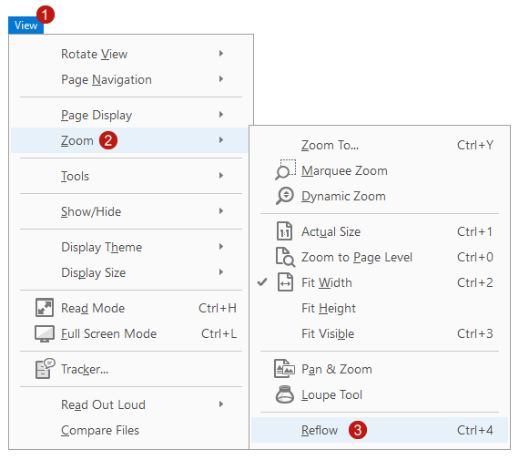
This view can make a document easier to read on a mobile device, or a tablet. No horizontal scrolling is needed to read the text. When I select View > Zoom > Reflow again, the Reflow view is turned off.
Reviewing Reading Order
I’ll start reviewing the content order on the second page. When I come to the image in the middle of the page, I notice something strange. The image is labeled with the number 8—
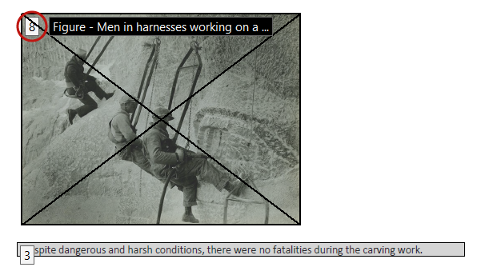
but its visual position is before the text below it—which is labeled number 3.
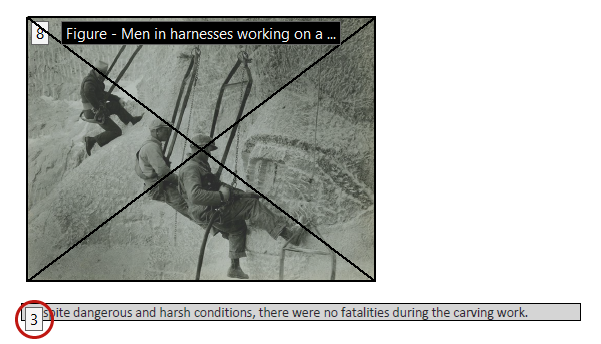
This is due to the error that occurs when a Word document is converted to a PDF. Although image elements are placed correctly in the document’s tags order, they are placed incorrectly in the page content order. As a result, when the PDF is displayed in the Reflow view, an image will be presented in the correct order to a screen reading software user, but out of order to a sighted user.
Keyboard shortcut for Reflow view
I’ll use the keyboard shortcut Ctrl + 4 (Command + 4 on Mac) to re-enable Reflow. Images are presented last on the page, because that is where they are incorrectly positioned in the page content order.
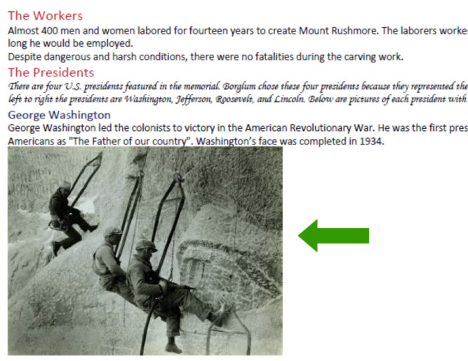
You may also notice that none of the images of the presidents are presented. As you will remember from a previous video, images marked as decorative in Office will be identified as an Artifact. Elements that are identified as Artifacts are not tagged, and only tagged elements are shown in Reflow. I’ll use the keyboard shortcut again to disable Reflow.
Repairing Reading Order
I'll demonstrate how to address this issue in order to fully optimize the accessibility of our example PDF.
Order Panel
Next I’ll use the Order panel to move the image on page two to its correct position in the page content order. On the bottom-right corner of the Reading Order tool, I’ll click the “Show Order Panel” button.
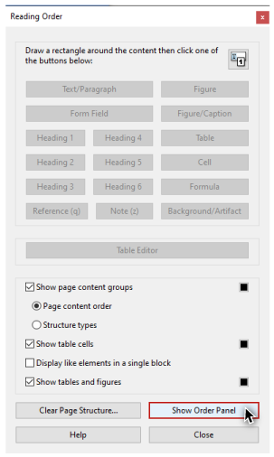
On the Navigation panel on the left-hand side of the user interface, the Order panel opens.
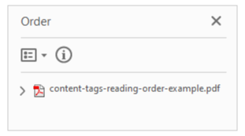
I’m finished with the Reading Order tool, so I’ll click the “Close” button,
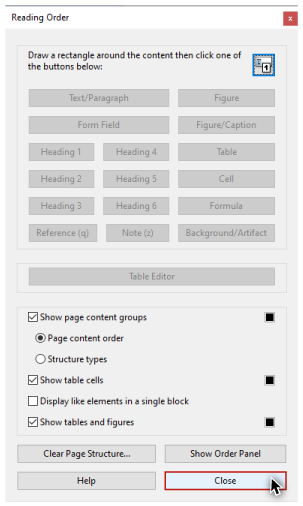
and hide the options for the Accessibility pane.
Navigating the Order panel
On the Order panel I’ll use my mouse to click and expand the document-level tag. Each of the four pages in the document has its own group in the tree. I can use the up and down arrow keys to navigate forward and backward. When a page's group receives focus, it expands. I can also expand and collapse page groups with the left and right arrow keys. The number on each element in the order tree matches the number shown in the white labels on its region in the document viewer.
Changing an element's position
To change the position of an element in the order tree, I can either click and drag with the mouse, or use the cut and paste keyboard shortcuts.
Using the mouse
To fix the issue on page two, I'll navigate down the tree until I see the image labeled number 8 highlighted in the document viewer.
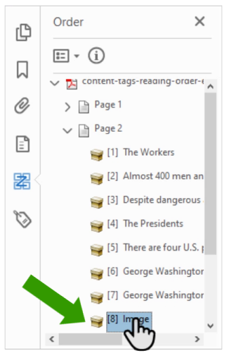
Then I'll use my mouse to drag the highlighted element to its correct position—above the text element that is currently labeled number 3.
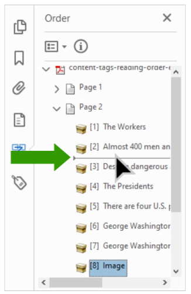
I’ll go to page four and use this same process to correctly position the chart image.
Using the mouse and keyboard
In a previous video, I tagged the footer text at the bottom of the last page as a Paragraph. I can see that this element is positioned first in the page four group. To move it, I'll select this element on the Order panel with my mouse, and cut it with the keyboard shortcut Control + X (Command + X on Mac). To paste the footer text under the last element on this page, I’ll select this last element, and paste with the keyboard shortcut Control + V (Command + V on Mac).
Tags Pane
When a change is made to the content order, Acrobat will try to make a corresponding change in the tags order if needed. Because changes to the tags order are not always made successfully, whenever changes are made in the Order panel, these changes will need to be verified in the Tags panel.
Verifying tags order
To do this I'll open the Tags pane by clicking on the icon in the Navigation panel.
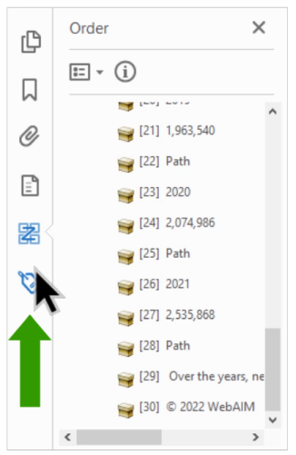
As I navigate down the tree, each tag’s corresponding region is highlighted in the document. The tags order of this document matches the visual order of the elements.
Fixing the nesting of tags
I also want to make sure that the tags are nested correctly. For example, this Paragraph tag for the footer text that I added should be moved inside the Section tag. I’ll cut this tag, select the last tag in the Section, and paste. Remember—changing the order of the tags won't change the look of the PDF, but it will change the order in which the document’s tagged elements are presented to a screen reader user—so be very careful.
When you have completed the final step by reviewing and repairing a document’s content order and tags order, you will have a PDF that will be optimized for many users.